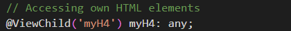
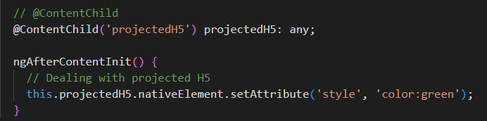

@ViewChild can be used to access the elements of the same component or a child component using a Template Reference Variable.
@ViewChild can be used to access the child component from the HTML template of same component using a Template Reference Variable. Once you have acces to that child component, you will have access to it's variables, methods etc.
Here we have Access to H4 element using @ViewChild and set it's color to RED.
in TS File
We have app-child component here in Green which is given a Temp Ref Var (#childComp). Using this variable and @ViewChild, we have access to it in TS file and all it's fields and methods as shown below.
In TS File
Inside Child Comp TS file
@ViewChildren can be used to access multiple elements with same Template Reference Variable from HTML of the same component.
@ViewChildren can be used to access multiple Child-Components with same Template Reference Variable from HTML of the same component.
We are able to access both paragraphs here with @ViewChildren and set their color Green. Both Paragraphs have same TRV (#myParagraph).
I am 1st Paragraph.
I am 2nd Paragraph.
In Parent HTML
In Child HTML
In Child TS File
In Parent HTML
In Child HTML
In Child TS File